library(data.table); library(ggplot2); library(knitr); library(lme4); library(QuantPsyc)
opts_chunk$set(warning=TRUE, cache=TRUE,tidy=FALSE,autodep=TRUE,dev=c('png','pdf'),fig.width=20,fig.height=12.5,out.width='1440px',out.height='900px',cache.extra=file.info('krmh.rdata')[, 'mtime']);
opts_knit$set(self.contained = F)
source("0__helpers.R")
load("krmh.rdata")The krmh.1 dataset contains only those participants where paternal age is known, the birthdate is between 1720 and 1850 and the marriage is known (meaning we know when it started and how it ended by spousal death). In known marriages we can assume that missing death dates for the kids mean that they migrated out.
All of the following models have the following in common:
Bobyqa is fairly robust to convergence failures. In addition to using Bobyqa, we center some variables that otherwise lead to large eigenvalues.
control_defaults = glmerControl(optimizer = "bobyqa")As in our main models, we control for birth.cohort (birth years in five equally large bins), male sex. Additionally, we control for paternal and maternal loss (whether either parent died within 5 years of the birth), for maternal age (bins of 14-20, 20-35 and 35-50), the total number of siblings (constant for all siblings) and the number of siblings who where alive and dependent during the first 5 years of the child (defined as being alive simultaenously, less than 10 years old, and not dying in the first year).
We added random intercepts for each family (father-mother dyad). We then controlled for the average paternal age in the family. Hence, the paternal age effects in the plot are split into those between families and those within families or between siblings. The relevant effect for our hypothesized mechanism, de novo mutations, is paternal age between siblings.
Here, episodes of selection refers to survival, mating success, reproductive success. To steer clear of sacrificial pseudo-replication, we make sure that each effect cannot be explained by the episode of selection preceding it. At its simplest, we check for effect on survival to reproduction only among those who lived to their first birthday. In later models, we look for an effect on number of children only among those who married and control their number of spouses.
Survive_infancy <- glmer(
survive1y ~ center(dependent_sibs_f5y) + maternalage.factor + paternalloss + maternalloss + center(nr.siblings) + birth.cohort + male + paternalage.mean + paternalage.diff + (1|idParents),
data= krmh.1,
family = 'binomial', control = control_defaults )
summary(Survive_infancy)## Generalized linear mixed model fit by maximum likelihood (Laplace
## Approximation) [glmerMod]
## Family: binomial ( logit )
## Formula: survive1y ~ center(dependent_sibs_f5y) + maternalage.factor +
## paternalloss + maternalloss + center(nr.siblings) + birth.cohort +
## male + paternalage.mean + paternalage.diff + (1 | idParents)
## Data: krmh.1
## Control: control_defaults
##
## AIC BIC logLik deviance df.resid
## 8032 8142 -4001 8002 11490
##
## Scaled residuals:
## Min 1Q Median 3Q Max
## -5.339 0.233 0.287 0.351 1.009
##
## Random effects:
## Groups Name Variance Std.Dev.
## idParents (Intercept) 0.657 0.81
## Number of obs: 11505, groups: idParents, 2612
##
## Fixed effects:
## Estimate Std. Error z value Pr(>|z|)
## (Intercept) 2.4232 0.1082 22.39 < 2e-16 ***
## center(dependent_sibs_f5y) -0.2970 0.0414 -7.18 6.9e-13 ***
## maternalage.factor(14,20] -0.5141 0.2969 -1.73 0.08334 .
## maternalage.factor(35,50] -0.3463 0.0972 -3.56 0.00037 ***
## paternalloss -0.2991 0.1304 -2.29 0.02178 *
## maternalloss -0.8654 0.1153 -7.50 6.2e-14 ***
## center(nr.siblings) -0.0158 0.0180 -0.88 0.37901
## birth.cohort(1773,1796] -0.1244 0.1137 -1.09 0.27395
## birth.cohort(1796,1814] 0.0318 0.1142 0.28 0.78058
## birth.cohort(1814,1830] 0.4111 0.1165 3.53 0.00042 ***
## birth.cohort(1830,1850] 0.4854 0.1199 4.05 5.2e-05 ***
## male -0.1838 0.0625 -2.94 0.00328 **
## paternalage.mean 0.0620 0.0634 0.98 0.32869
## paternalage.diff 0.1364 0.0953 1.43 0.15221
## ---
## Signif. codes: 0 '***' 0.001 '**' 0.01 '*' 0.05 '.' 0.1 ' ' 1
##
## Correlation of Fixed Effects:
## (Intr) c(__5) m.(14, m.(35, ptrnll mtrnll cnt(.) b.(177 b.(179
## cntr(dp__5) -0.273
## mtr.(14,20] -0.045 0.099
## mtr.(35,50] -0.306 0.228 -0.045
## paternallss -0.145 0.069 -0.021 0.074
## maternallss -0.215 0.099 -0.003 0.122 0.022
## cntr(nr.sb) 0.076 -0.550 -0.074 -0.128 0.094 0.137
## b.(1773,179 -0.604 0.025 0.018 -0.034 0.004 0.019 0.022
## b.(1796,181 -0.618 -0.008 0.002 -0.045 0.006 0.037 0.043 0.602
## b.(1814,183 -0.603 -0.051 0.000 -0.034 0.010 0.045 0.057 0.566 0.618
## b.(1830,185 -0.583 -0.066 0.008 -0.074 0.025 0.035 0.099 0.556 0.586
## male -0.329 0.014 0.020 -0.012 0.008 -0.010 -0.002 0.005 0.012
## paternlg.mn 0.053 0.011 0.031 -0.114 -0.015 0.077 -0.126 -0.046 -0.052
## patrnlg.dff 0.256 0.031 0.164 -0.646 -0.196 -0.221 -0.057 -0.014 -0.019
## b.(181 b.(183 male ptrnlg.m
## cntr(dp__5)
## mtr.(14,20]
## mtr.(35,50]
## paternallss
## maternallss
## cntr(nr.sb)
## b.(1773,179
## b.(1796,181
## b.(1814,183
## b.(1830,185 0.602
## male 0.018 0.016
## paternlg.mn -0.030 -0.066 0.005
## patrnlg.dff -0.051 -0.072 0.015 0.084Survive_infancy_coefs = fortify_mine(Survive_infancy)
plot_fortified_mer(Survive_infancy_coefs, "Surviving infancy / first year")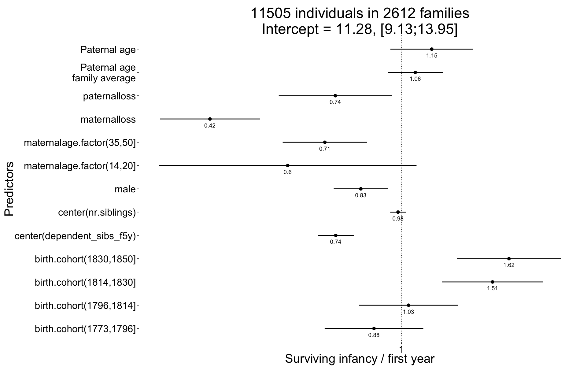
plot_residuals(Survive_infancy)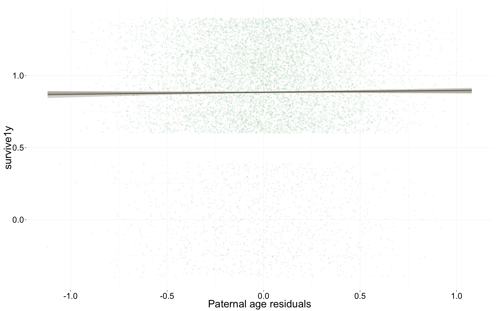
Survive_reproductive <- glmer(
surviveR ~ center(dependent_sibs_f5y) + maternalage.factor + paternalloss + maternalloss + center(nr.siblings) + birth.cohort + male + paternalage.mean + paternalage.diff + (1|idParents),
data= krmh.1, subset = survive1y == TRUE & byear < 1845,
family = 'binomial', control = control_defaults)
summary(Survive_reproductive)## Generalized linear mixed model fit by maximum likelihood (Laplace
## Approximation) [glmerMod]
## Family: binomial ( logit )
## Formula: surviveR ~ center(dependent_sibs_f5y) + maternalage.factor +
## paternalloss + maternalloss + center(nr.siblings) + birth.cohort +
## male + paternalage.mean + paternalage.diff + (1 | idParents)
## Data: krmh.1
## Control: control_defaults
## Subset: survive1y == TRUE & byear < 1845
##
## AIC BIC logLik deviance df.resid
## 8252 8360 -4111 8222 9518
##
## Scaled residuals:
## Min 1Q Median 3Q Max
## -3.058 0.326 0.377 0.432 0.876
##
## Random effects:
## Groups Name Variance Std.Dev.
## idParents (Intercept) 0.305 0.552
## Number of obs: 9533, groups: idParents, 2422
##
## Fixed effects:
## Estimate Std. Error z value Pr(>|z|)
## (Intercept) 1.66027 0.09058 18.33 < 2e-16 ***
## center(dependent_sibs_f5y) -0.06821 0.03252 -2.10 0.03593 *
## maternalage.factor(14,20] -0.31796 0.29198 -1.09 0.27617
## maternalage.factor(35,50] -0.11245 0.09088 -1.24 0.21595
## paternalloss -0.29676 0.11872 -2.50 0.01243 *
## maternalloss -0.47491 0.11402 -4.17 0.00003113 ***
## center(nr.siblings) -0.02421 0.01528 -1.58 0.11315
## birth.cohort(1773,1796] -0.05883 0.09977 -0.59 0.55545
## birth.cohort(1796,1814] 0.21992 0.10024 2.19 0.02824 *
## birth.cohort(1814,1830] 0.38083 0.09860 3.86 0.00011 ***
## birth.cohort(1830,1850] 0.57389 0.10967 5.23 0.00000017 ***
## male -0.05315 0.05857 -0.91 0.36420
## paternalage.mean 0.01083 0.05596 0.19 0.84650
## paternalage.diff 0.00932 0.08743 0.11 0.91515
## ---
## Signif. codes: 0 '***' 0.001 '**' 0.01 '*' 0.05 '.' 0.1 ' ' 1
##
## Correlation of Fixed Effects:
## (Intr) c(__5) m.(14, m.(35, ptrnll mtrnll cnt(.) b.(177 b.(179
## cntr(dp__5) -0.122
## mtr.(14,20] -0.028 0.085
## mtr.(35,50] -0.285 0.185 -0.047
## paternallss -0.151 0.046 -0.026 0.081
## maternallss -0.175 0.045 -0.003 0.095 0.024
## cntr(nr.sb) -0.024 -0.501 -0.072 -0.113 0.114 0.153
## b.(1773,179 -0.623 0.040 0.012 -0.025 0.003 0.019 0.031
## b.(1796,181 -0.631 0.029 -0.003 -0.034 0.016 0.031 0.043 0.575
## b.(1814,183 -0.653 0.007 0.001 -0.017 0.015 0.042 0.046 0.569 0.595
## b.(1830,185 -0.576 -0.014 0.006 -0.066 0.036 0.042 0.074 0.517 0.531
## male -0.344 0.014 0.021 -0.012 0.004 -0.006 0.005 0.004 0.004
## paternlg.mn 0.040 0.029 0.028 -0.103 -0.015 0.080 -0.130 -0.048 -0.053
## patrnlg.dff 0.263 0.040 0.158 -0.657 -0.209 -0.193 -0.050 -0.017 -0.018
## b.(181 b.(183 male ptrnlg.m
## cntr(dp__5)
## mtr.(14,20]
## mtr.(35,50]
## paternallss
## maternallss
## cntr(nr.sb)
## b.(1773,179
## b.(1796,181
## b.(1814,183
## b.(1830,185 0.555
## male 0.020 0.016
## paternlg.mn -0.038 -0.056 0.008
## patrnlg.dff -0.045 -0.058 0.017 0.082Survive_reproductive_coefs = fortify_mine(Survive_reproductive)
plot_fortified_mer(Survive_reproductive_coefs, "Surviving to reproductive age / 15 years")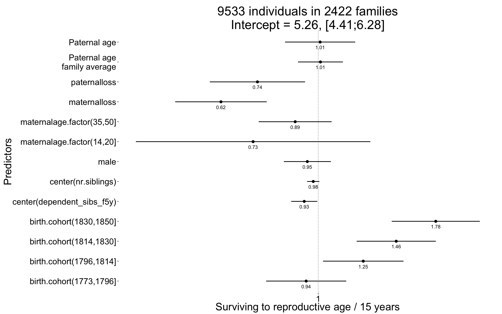
plot_residuals(Survive_reproductive)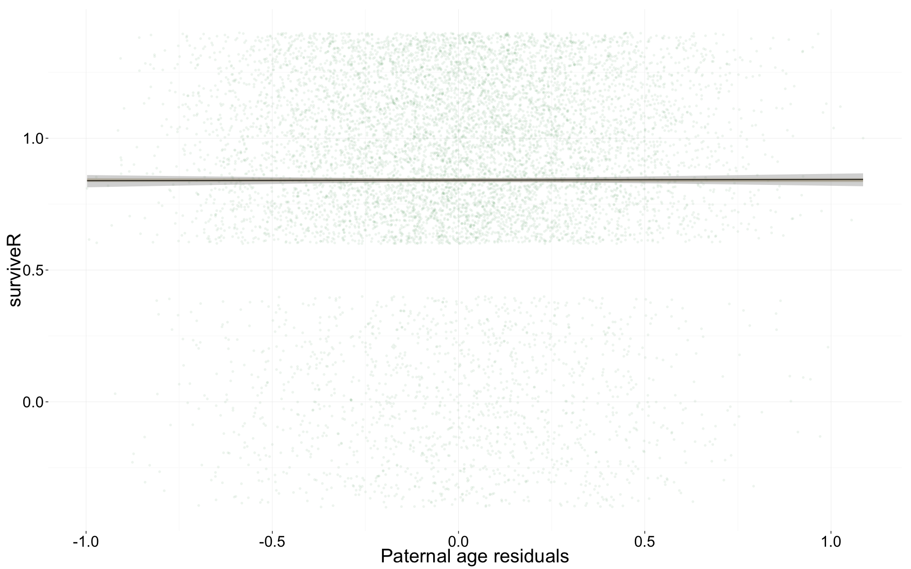
Ever_married <- glmer(
ever_married ~ center(dependent_sibs_f5y) + maternalage.factor + paternalloss + maternalloss + center(nr.siblings) + birth.cohort + male + paternalage.mean + paternalage.diff + (1|idParents),
data= krmh.1, subset = surviveR == T & byear < 1835,
family = 'binomial', control = control_defaults )
summary(Ever_married)## Generalized linear mixed model fit by maximum likelihood (Laplace
## Approximation) [glmerMod]
## Family: binomial ( logit )
## Formula: ever_married ~ center(dependent_sibs_f5y) + maternalage.factor +
## paternalloss + maternalloss + center(nr.siblings) + birth.cohort +
## male + paternalage.mean + paternalage.diff + (1 | idParents)
## Data: krmh.1
## Control: control_defaults
## Subset: surviveR == T & byear < 1835
##
## AIC BIC logLik deviance df.resid
## 8804 8907 -4387 8774 6909
##
## Scaled residuals:
## Min 1Q Median 3Q Max
## -2.066 -1.050 0.561 0.701 1.531
##
## Random effects:
## Groups Name Variance Std.Dev.
## idParents (Intercept) 0.359 0.599
## Number of obs: 6924, groups: idParents, 2094
##
## Fixed effects:
## Estimate Std. Error z value Pr(>|z|)
## (Intercept) 0.4198 0.0819 5.13 3.0e-07 ***
## center(dependent_sibs_f5y) -0.0353 0.0306 -1.16 0.24806
## maternalage.factor(14,20] 0.1992 0.3060 0.65 0.51509
## maternalage.factor(35,50] 0.0102 0.0867 0.12 0.90667
## paternalloss -0.2006 0.1167 -1.72 0.08563 .
## maternalloss -0.4430 0.1163 -3.81 0.00014 ***
## center(nr.siblings) 0.0130 0.0148 0.88 0.37895
## birth.cohort(1773,1796] 0.3659 0.0942 3.89 0.00010 ***
## birth.cohort(1796,1814] 0.5548 0.0918 6.04 1.5e-09 ***
## birth.cohort(1814,1830] 0.7186 0.0896 8.02 1.1e-15 ***
## birth.cohort(1830,1850] 0.7887 0.1281 6.16 7.4e-10 ***
## male -0.4671 0.0548 -8.52 < 2e-16 ***
## paternalage.mean -0.1287 0.0527 -2.44 0.01469 *
## paternalage.diff -0.2016 0.0811 -2.49 0.01293 *
## ---
## Signif. codes: 0 '***' 0.001 '**' 0.01 '*' 0.05 '.' 0.1 ' ' 1
##
## Correlation of Fixed Effects:
## (Intr) c(__5) m.(14, m.(35, ptrnll mtrnll cnt(.) b.(177 b.(179
## cntr(dp__5) -0.070
## mtr.(14,20] -0.009 0.073
## mtr.(35,50] -0.290 0.199 -0.044
## paternallss -0.146 0.053 -0.029 0.075
## maternallss -0.168 0.034 -0.001 0.087 0.021
## cntr(nr.sb) -0.015 -0.507 -0.056 -0.126 0.109 0.137
## b.(1773,179 -0.625 0.027 0.008 -0.023 0.012 0.025 0.031
## b.(1796,181 -0.660 0.027 -0.004 -0.026 0.030 0.031 0.048 0.584
## b.(1814,183 -0.687 0.012 0.001 -0.012 0.024 0.042 0.040 0.581 0.637
## b.(1830,185 -0.486 0.019 0.003 -0.019 0.034 0.025 0.036 0.410 0.439
## male -0.356 0.001 0.001 -0.015 0.001 0.010 0.014 -0.005 -0.015
## paternlg.mn 0.040 0.027 0.019 -0.108 -0.026 0.089 -0.139 -0.048 -0.061
## patrnlg.dff 0.286 0.009 0.140 -0.662 -0.199 -0.174 -0.019 -0.024 -0.027
## b.(181 b.(183 male ptrnlg.m
## cntr(dp__5)
## mtr.(14,20]
## mtr.(35,50]
## paternallss
## maternallss
## cntr(nr.sb)
## b.(1773,179
## b.(1796,181
## b.(1814,183
## b.(1830,185 0.479
## male -0.004 0.002
## paternlg.mn -0.041 -0.027 0.021
## patrnlg.dff -0.066 -0.075 0.021 0.079Ever_married_coefs = fortify_mine(Ever_married)
plot_fortified_mer(Ever_married_coefs, "Odds of ever marrying")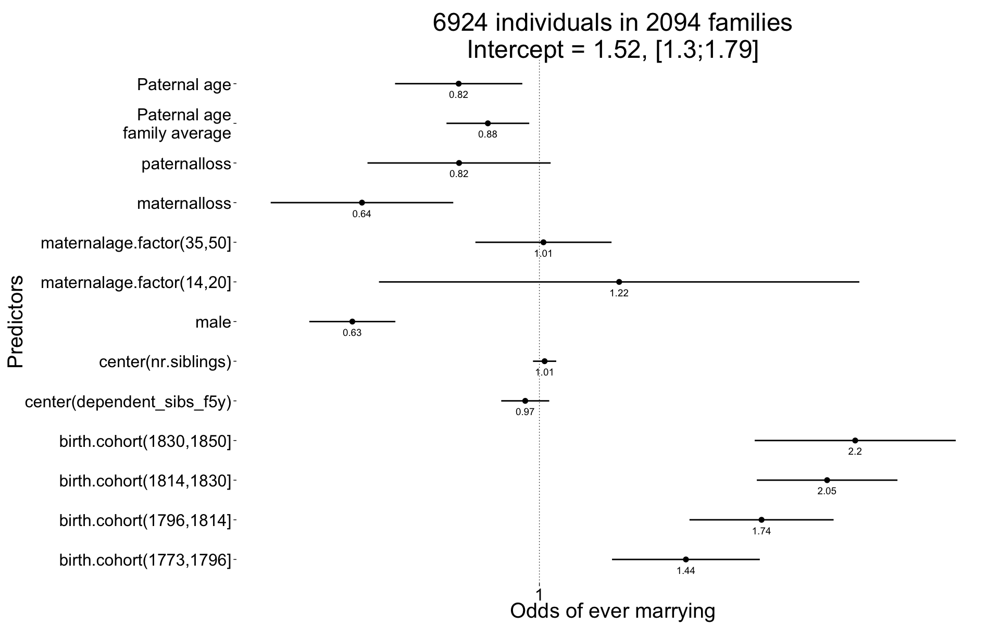
plot_residuals(Ever_married)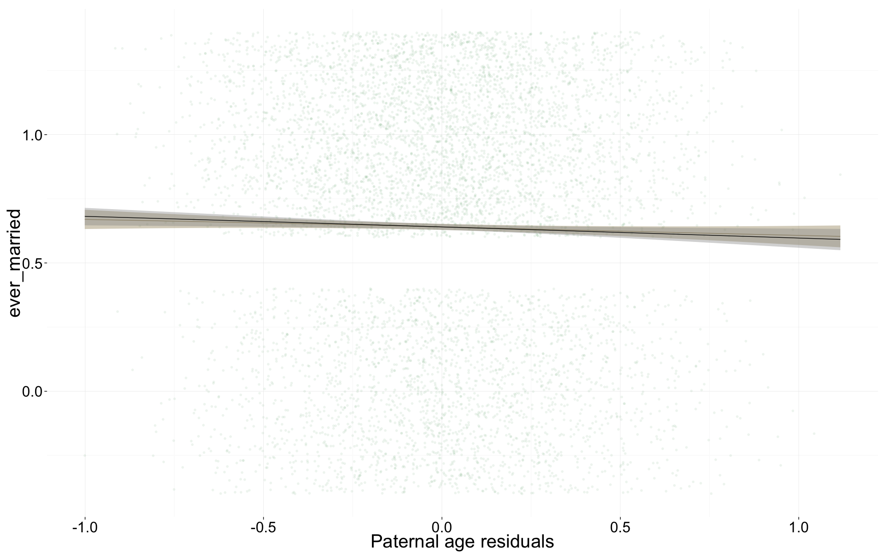
Children <- glmer(
children ~ center(spouses)*male + center(dependent_sibs_f5y) + maternalage.factor + paternalloss + maternalloss + center(nr.siblings) + birth.cohort + paternalage.mean + paternalage.diff + (1|idParents) + (1|idIndividu),
data= krmh.1, subset = spouses > 0 & byear < 1835,
family = 'poisson', control = control_defaults )
summary(Children)## Generalized linear mixed model fit by maximum likelihood (Laplace
## Approximation) [glmerMod]
## Family: poisson ( log )
## Formula: children ~ center(spouses) * male + center(dependent_sibs_f5y) +
## maternalage.factor + paternalloss + maternalloss + center(nr.siblings) +
## birth.cohort + paternalage.mean + paternalage.diff + (1 |
## idParents) + (1 | idIndividu)
## Data: krmh.1
## Control: control_defaults
## Subset: spouses > 0 & byear < 1835
##
## AIC BIC logLik deviance df.resid
## 21830 21946 -10897 21794 4415
##
## Scaled residuals:
## Min 1Q Median 3Q Max
## -1.561 -0.719 0.113 0.488 1.173
##
## Random effects:
## Groups Name Variance Std.Dev.
## idIndividu (Intercept) 0.3286 0.573
## idParents (Intercept) 0.0114 0.107
## Number of obs: 4433, groups: idIndividu, 4433; idParents, 1835
##
## Fixed effects:
## Estimate Std. Error z value Pr(>|z|)
## (Intercept) 1.21548 0.04682 25.96 < 2e-16 ***
## center(spouses) 0.08897 0.04436 2.01 0.04489 *
## male -0.03544 0.04655 -0.76 0.44654
## center(dependent_sibs_f5y) -0.01397 0.01326 -1.05 0.29210
## maternalage.factor(14,20] -0.17841 0.12582 -1.42 0.15621
## maternalage.factor(35,50] -0.02865 0.03820 -0.75 0.45325
## paternalloss -0.04024 0.05421 -0.74 0.45789
## maternalloss 0.02164 0.05531 0.39 0.69563
## center(nr.siblings) -0.00371 0.00611 -0.61 0.54383
## birth.cohort(1773,1796] -0.00196 0.04166 -0.05 0.96256
## birth.cohort(1796,1814] -0.08444 0.03974 -2.12 0.03360 *
## birth.cohort(1814,1830] -0.16344 0.03842 -4.25 0.000021 ***
## birth.cohort(1830,1850] -0.18951 0.05404 -3.51 0.00045 ***
## paternalage.mean -0.03000 0.02190 -1.37 0.17069
## paternalage.diff -0.04568 0.03549 -1.29 0.19801
## center(spouses):male 0.22278 0.06155 3.62 0.00029 ***
## ---
## Signif. codes: 0 '***' 0.001 '**' 0.01 '*' 0.05 '.' 0.1 ' ' 1
##
## Correlation of Fixed Effects:
## (Intr) cntr() male c(__5) m.(14, m.(35, ptrnll mtrnll cnt(.)
## centr(spss) -0.633
## male -0.470 0.606
## cntr(dp__5) -0.056 0.025 0.008
## mtr.(14,20] -0.001 -0.006 -0.012 0.077
## mtr.(35,50] -0.220 0.000 -0.005 0.208 -0.044
## paternallss -0.095 -0.006 -0.019 0.040 -0.036 0.076
## maternallss -0.102 0.001 -0.012 0.012 -0.009 0.075 -0.002
## cntr(nr.sb) -0.021 -0.004 -0.006 -0.535 -0.074 -0.160 0.109 0.125
## b.(1773,179 -0.534 0.035 -0.018 0.004 0.005 -0.028 0.016 0.001 0.045
## b.(1796,181 -0.563 0.039 -0.027 0.015 -0.003 -0.022 0.023 0.020 0.051
## b.(1814,183 -0.595 0.040 -0.019 0.005 0.002 -0.016 0.023 0.034 0.046
## b.(1830,185 -0.415 0.013 -0.051 0.002 -0.004 -0.021 0.036 0.019 0.049
## paternlg.mn 0.021 0.018 0.023 0.031 0.009 -0.080 -0.023 0.073 -0.157
## patrnlg.dff 0.216 0.001 0.007 -0.028 0.150 -0.663 -0.186 -0.153 0.031
## cntr(spss): 0.411 -0.718 -0.859 -0.017 0.012 -0.008 0.008 0.014 0.019
## b.(177 b.(179 b.(181 b.(183 ptrnlg.m ptrnlg.d
## centr(spss)
## male
## cntr(dp__5)
## mtr.(14,20]
## mtr.(35,50]
## paternallss
## maternallss
## cntr(nr.sb)
## b.(1773,179
## b.(1796,181 0.614
## b.(1814,183 0.632 0.671
## b.(1830,185 0.454 0.480 0.504
## paternlg.mn -0.037 -0.051 -0.023 -0.018
## patrnlg.dff -0.008 -0.020 -0.039 -0.058 0.066
## cntr(spss): 0.020 0.021 0.035 0.061 -0.021 0.007Children_coefs = fortify_mine(Children)
plot_fortified_mer(Children_coefs, "Nr. Children (of those who had at least one spouse")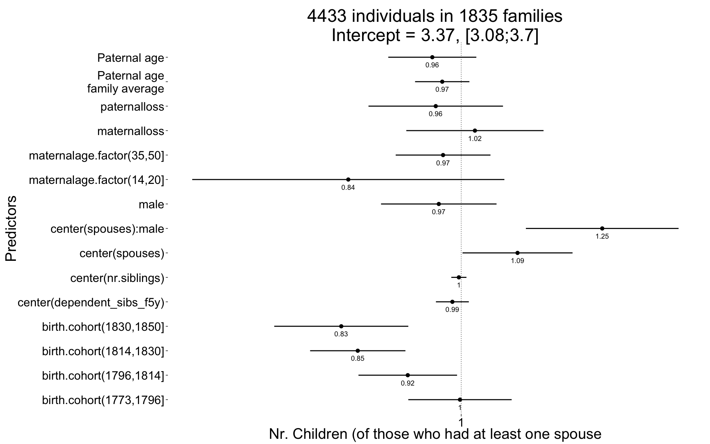
plot_residuals(Children)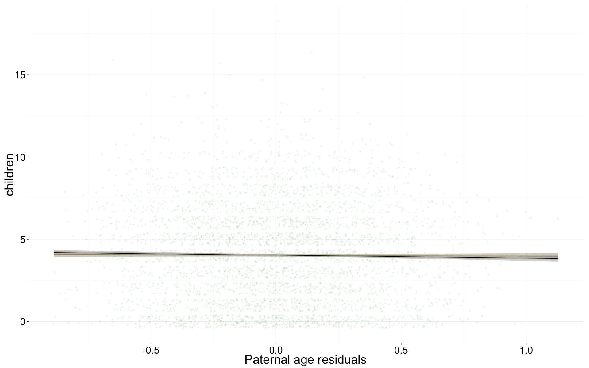
Children.surviving1y <- glmer(
children.surviving1y ~ center(dependent_sibs_f5y) + center(children.wddate) + maternalage.factor + paternalloss + maternalloss + center(nr.siblings) + birth.cohort + male +paternalage.mean + paternalage.diff + (1|idParents) + (1|idIndividu),
data= krmh.1, subset = children > 0 & byear < 1835,
family = 'poisson', control = control_defaults )
summary(Children.surviving1y)## Generalized linear mixed model fit by maximum likelihood (Laplace
## Approximation) [glmerMod]
## Family: poisson ( log )
## Formula:
## children.surviving1y ~ center(dependent_sibs_f5y) + center(children.wddate) +
## maternalage.factor + paternalloss + maternalloss + center(nr.siblings) +
## birth.cohort + male + paternalage.mean + paternalage.diff +
## (1 | idParents) + (1 | idIndividu)
## Data: krmh.1
## Control: control_defaults
## Subset: children > 0 & byear < 1835
##
## AIC BIC logLik deviance df.resid
## 12054 12160 -6010 12020 3746
##
## Scaled residuals:
## Min 1Q Median 3Q Max
## -5.324 -0.473 0.063 0.532 2.177
##
## Random effects:
## Groups Name Variance Std.Dev.
## idIndividu (Intercept) 0 0
## idParents (Intercept) 0 0
## Number of obs: 3763, groups: idIndividu, 3763; idParents, 1735
##
## Fixed effects:
## Estimate Std. Error z value Pr(>|z|)
## (Intercept) 0.44847 0.02952 15.2 <2e-16 ***
## center(dependent_sibs_f5y) 0.00234 0.01026 0.2 0.8193
## center(children.wddate) 0.21511 0.00289 74.5 <2e-16 ***
## maternalage.factor(14,20] 0.17137 0.09553 1.8 0.0728 .
## maternalage.factor(35,50] 0.01602 0.02998 0.5 0.5931
## paternalloss -0.07508 0.04233 -1.8 0.0761 .
## maternalloss 0.01655 0.04228 0.4 0.6955
## center(nr.siblings) -0.00101 0.00467 -0.2 0.8280
## birth.cohort(1773,1796] 0.04110 0.02805 1.5 0.1428
## birth.cohort(1796,1814] 0.07574 0.02757 2.7 0.0060 **
## birth.cohort(1814,1830] -0.08587 0.03000 -2.9 0.0042 **
## birth.cohort(1830,1850] -0.48100 0.05650 -8.5 <2e-16 ***
## male -0.01951 0.01853 -1.1 0.2924
## paternalage.mean 0.00205 0.01644 0.1 0.9008
## paternalage.diff -0.00839 0.02785 -0.3 0.7631
## ---
## Signif. codes: 0 '***' 0.001 '**' 0.01 '*' 0.05 '.' 0.1 ' ' 1
##
## Correlation of Fixed Effects:
## (Intr) c(__5) cntr(c.) m.(14, m.(35, ptrnll mtrnll cntr(n.)
## cntr(dp__5) -0.061
## cntr(chld.) -0.504 0.035
## mtr.(14,20] -0.001 0.072 0.042
## mtr.(35,50] -0.279 0.207 -0.016 -0.045
## paternallss -0.086 0.030 -0.062 -0.056 0.097
## maternallss -0.139 0.010 0.000 -0.011 0.091 0.015
## cntr(nr.sb) -0.022 -0.557 -0.021 -0.077 -0.169 0.122 0.119
## b.(1773,179 -0.572 0.003 0.015 -0.023 -0.010 -0.007 0.010 0.060
## b.(1796,181 -0.628 -0.002 0.109 -0.016 -0.013 0.012 0.024 0.072
## b.(1814,183 -0.673 0.008 0.259 -0.021 -0.015 0.009 0.029 0.042
## b.(1830,185 -0.360 0.027 0.140 -0.002 -0.001 0.021 0.024 0.015
## male -0.276 -0.002 -0.075 -0.014 -0.044 -0.027 0.022 0.007
## paternlg.mn 0.014 0.027 0.033 0.017 -0.093 -0.029 0.071 -0.154
## patrnlg.dff 0.245 -0.036 0.065 0.154 -0.667 -0.197 -0.165 0.044
## b.(177 b.(179 b.(181 b.(183 male ptrnlg.m
## cntr(dp__5)
## cntr(chld.)
## mtr.(14,20]
## mtr.(35,50]
## paternallss
## maternallss
## cntr(nr.sb)
## b.(1773,179
## b.(1796,181 0.601
## b.(1814,183 0.554 0.588
## b.(1830,185 0.295 0.314 0.312
## male 0.021 0.002 0.036 -0.002
## paternlg.mn -0.024 -0.045 0.007 -0.001 0.024
## patrnlg.dff -0.020 -0.021 -0.016 -0.037 0.032 0.084Children.surviving1y_coefs = fortify_mine(Children.surviving1y)
plot_fortified_mer(Children.surviving1y_coefs, "Nr. Children who survive first year (of those who survived infancy")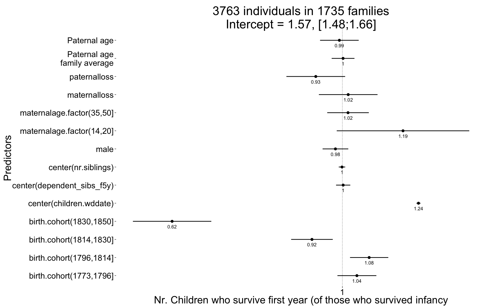
plot_residuals(Children.surviving1y)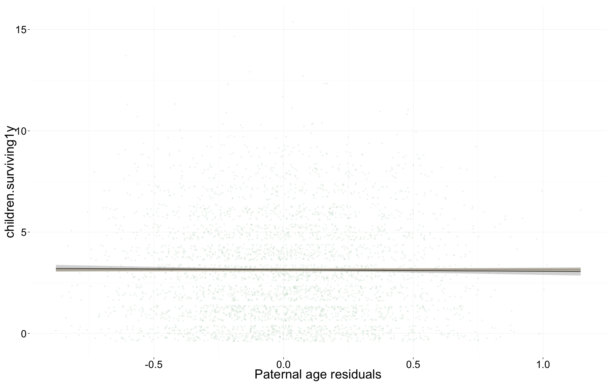
Grandchildren.per.Child <- glmer(
grandchildren ~ center(dependent_sibs_f5y) + center(children) + maternalage.factor + paternalloss + maternalloss + center(nr.siblings) + birth.cohort + male +paternalage.mean + paternalage.diff + (1|idParents) + (1|idIndividu),
data= krmh.1, subset = children > 0 & byear < 1810,
family = 'poisson', control = control_defaults )
summary(Grandchildren.per.Child)## Generalized linear mixed model fit by maximum likelihood (Laplace
## Approximation) [glmerMod]
## Family: poisson ( log )
## Formula: grandchildren ~ center(dependent_sibs_f5y) + center(children) +
## maternalage.factor + paternalloss + maternalloss + center(nr.siblings) +
## birth.cohort + male + paternalage.mean + paternalage.diff +
## (1 | idParents) + (1 | idIndividu)
## Data: krmh.1
## Control: control_defaults
## Subset: children > 0 & byear < 1810
##
## AIC BIC logLik deviance df.resid
## 12124 12208 -6047 12094 1943
##
## Scaled residuals:
## Min 1Q Median 3Q Max
## -1.5241 -0.5904 0.0534 0.2217 0.6228
##
## Random effects:
## Groups Name Variance Std.Dev.
## idIndividu (Intercept) 1.0045 1.002
## idParents (Intercept) 0.0671 0.259
## Number of obs: 1958, groups: idIndividu, 1958; idParents, 977
##
## Fixed effects:
## Estimate Std. Error z value Pr(>|z|)
## (Intercept) 0.88158 0.07425 11.87 < 2e-16 ***
## center(dependent_sibs_f5y) -0.05923 0.02982 -1.99 0.047 *
## center(children) 0.24354 0.00996 24.46 < 2e-16 ***
## maternalage.factor(14,20] 0.16642 0.27964 0.60 0.552
## maternalage.factor(35,50] -0.06984 0.08806 -0.79 0.428
## paternalloss -0.09034 0.11943 -0.76 0.449
## maternalloss 0.05828 0.11842 0.49 0.623
## center(nr.siblings) -0.00784 0.01386 -0.57 0.572
## birth.cohort(1773,1796] 0.03411 0.06707 0.51 0.611
## birth.cohort(1796,1814] -0.38444 0.07090 -5.42 0.000000059 ***
## male -0.08567 0.05306 -1.61 0.106
## paternalage.mean 0.00469 0.05076 0.09 0.926
## paternalage.diff 0.05217 0.08109 0.64 0.520
## ---
## Signif. codes: 0 '***' 0.001 '**' 0.01 '*' 0.05 '.' 0.1 ' ' 1
##
## Correlation of Fixed Effects:
## (Intr) c(__5) cntr() m.(14, m.(35, ptrnll mtrnll cnt(.) b.(177
## cntr(dp__5) -0.053
## cntr(chldr) -0.501 -0.001
## mtr.(14,20] -0.006 0.066 0.028
## mtr.(35,50] -0.322 0.218 0.017 -0.046
## paternallss -0.131 0.004 -0.006 -0.051 0.049
## maternallss -0.156 0.030 -0.005 -0.011 0.107 0.006
## cntr(nr.sb) -0.019 -0.547 -0.013 -0.062 -0.173 0.147 0.121
## b.(1773,179 -0.527 0.001 0.019 -0.014 -0.049 0.025 -0.006 0.066
## b.(1796,181 -0.508 0.018 0.022 -0.014 -0.039 0.033 0.025 0.066 0.570
## male -0.307 -0.010 -0.065 -0.002 -0.016 -0.019 0.016 0.015 0.000
## paternlg.mn 0.044 0.044 0.012 0.004 -0.076 -0.044 0.072 -0.186 -0.056
## patrnlg.dff 0.323 -0.059 -0.012 0.150 -0.673 -0.168 -0.181 0.054 -0.007
## b.(179 male ptrnlg.m
## cntr(dp__5)
## cntr(chldr)
## mtr.(14,20]
## mtr.(35,50]
## paternallss
## maternallss
## cntr(nr.sb)
## b.(1773,179
## b.(1796,181
## male -0.008
## paternlg.mn -0.080 0.017
## patrnlg.dff -0.034 0.012 0.078Grandchildren.per.Child_coefs = fortify_mine(Grandchildren.per.Child)
plot_fortified_mer(Grandchildren.per.Child_coefs, "Nr. of grandchildren per child")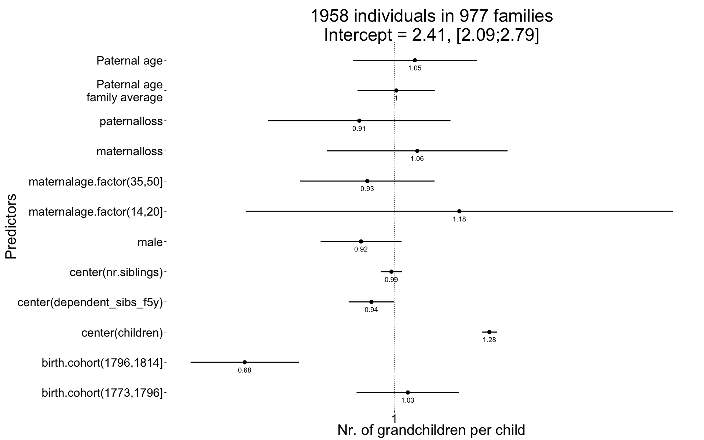
plot_residuals(Grandchildren.per.Child)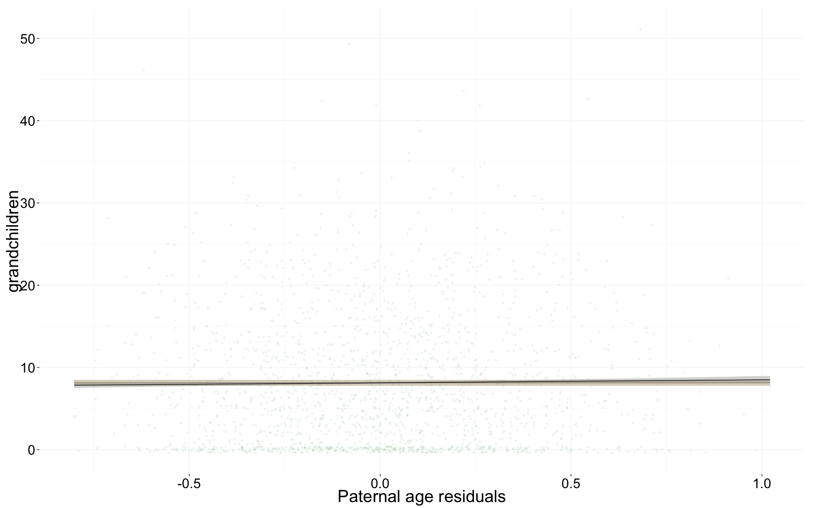
Any_surviving_children <- glmer(
any_surviving_children ~ center(dependent_sibs_f5y) + maternalage.factor + paternalloss + maternalloss + center(nr.siblings) + birth.cohort + male +paternalage.mean + paternalage.diff + (1|idParents),
data= krmh.1, subset = byear < 1835,
family = 'binomial', control = control_defaults )
summary(Any_surviving_children)## Generalized linear mixed model fit by maximum likelihood (Laplace
## Approximation) [glmerMod]
## Family: binomial ( logit )
## Formula:
## any_surviving_children ~ center(dependent_sibs_f5y) + maternalage.factor +
## paternalloss + maternalloss + center(nr.siblings) + birth.cohort +
## male + paternalage.mean + paternalage.diff + (1 | idParents)
## Data: krmh.1
## Control: control_defaults
## Subset: byear < 1835
##
## AIC BIC logLik deviance df.resid
## 11396 11504 -5683 11366 9434
##
## Scaled residuals:
## Min 1Q Median 3Q Max
## -1.129 -0.671 -0.559 1.171 3.139
##
## Random effects:
## Groups Name Variance Std.Dev.
## idParents (Intercept) 0.202 0.449
## Number of obs: 9449, groups: idParents, 2186
##
## Fixed effects:
## Estimate Std. Error z value Pr(>|z|)
## (Intercept) -0.7237 0.0701 -10.33 < 2e-16 ***
## center(dependent_sibs_f5y) -0.1152 0.0267 -4.31 1.6e-05 ***
## maternalage.factor(14,20] -0.1857 0.2354 -0.79 0.43028
## maternalage.factor(35,50] -0.1456 0.0751 -1.94 0.05248 .
## paternalloss -0.2597 0.1042 -2.49 0.01270 *
## maternalloss -0.5816 0.1057 -5.50 3.8e-08 ***
## center(nr.siblings) -0.0151 0.0124 -1.21 0.22631
## birth.cohort(1773,1796] 0.2733 0.0791 3.45 0.00055 ***
## birth.cohort(1796,1814] 0.2968 0.0773 3.84 0.00012 ***
## birth.cohort(1814,1830] -0.0597 0.0769 -0.78 0.43763
## birth.cohort(1830,1850] -0.8354 0.1295 -6.45 1.1e-10 ***
## male -0.2301 0.0470 -4.90 9.8e-07 ***
## paternalage.mean -0.0521 0.0447 -1.17 0.24313
## paternalage.diff -0.1737 0.0695 -2.50 0.01243 *
## ---
## Signif. codes: 0 '***' 0.001 '**' 0.01 '*' 0.05 '.' 0.1 ' ' 1
##
## Correlation of Fixed Effects:
## (Intr) c(__5) m.(14, m.(35, ptrnll mtrnll cnt(.) b.(177 b.(179
## cntr(dp__5) -0.066
## mtr.(14,20] -0.023 0.074
## mtr.(35,50] -0.289 0.210 -0.040
## paternallss -0.138 0.057 -0.021 0.085
## maternallss -0.163 0.060 -0.008 0.098 0.028
## cntr(nr.sb) -0.019 -0.515 -0.060 -0.134 0.115 0.128
## b.(1773,179 -0.646 0.025 0.014 -0.031 0.002 0.016 0.027
## b.(1796,181 -0.682 0.020 0.002 -0.034 0.011 0.032 0.038 0.608
## b.(1814,183 -0.704 0.012 0.007 -0.014 0.017 0.054 0.037 0.597 0.641
## b.(1830,185 -0.422 0.021 0.007 -0.016 0.020 0.036 0.025 0.358 0.377
## male -0.339 0.022 0.012 -0.007 -0.001 -0.003 -0.004 -0.001 0.007
## paternlg.mn 0.050 0.029 0.023 -0.096 -0.030 0.078 -0.143 -0.050 -0.053
## patrnlg.dff 0.295 -0.007 0.141 -0.652 -0.195 -0.178 0.009 -0.017 -0.022
## b.(181 b.(183 male ptrnlg.m
## cntr(dp__5)
## mtr.(14,20]
## mtr.(35,50]
## paternallss
## maternallss
## cntr(nr.sb)
## b.(1773,179
## b.(1796,181
## b.(1814,183
## b.(1830,185 0.397
## male 0.028 0.024
## paternlg.mn -0.031 -0.022 0.010
## patrnlg.dff -0.056 -0.051 0.022 0.068Any_surviving_children_coefs = fortify_mine(Any_surviving_children)
plot_fortified_mer(Any_surviving_children_coefs, "Any surviving children")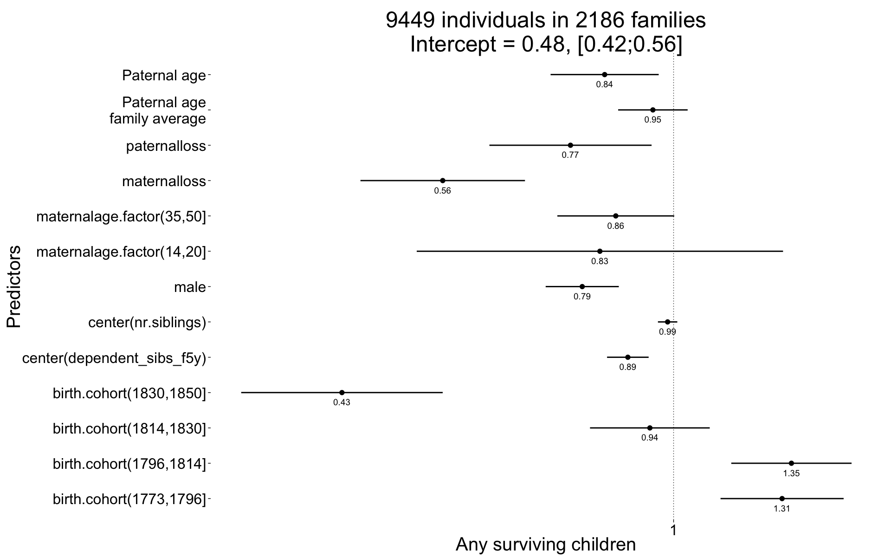
plot_residuals(Any_surviving_children)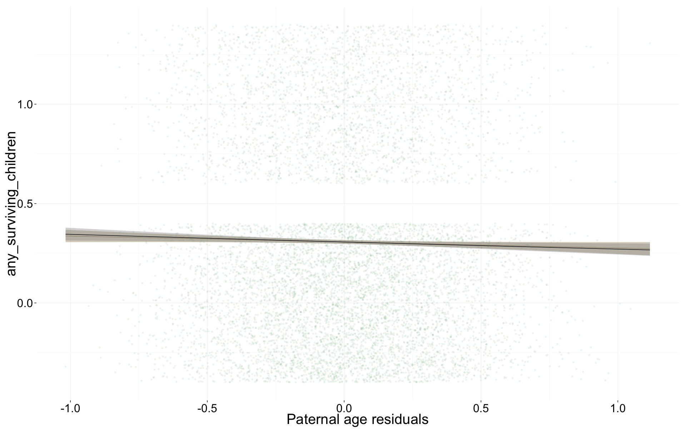
name = "krmh_main_controls"
save(list = lstype('confint.merMod'),file=paste0("coefs/",name,"_coefs.rdata"))
save(list = lstype(),file=paste0("coefs/",name,"_models.rdata"))sessionInfo()## R version 3.1.3 (2015-03-09)
## Platform: x86_64-apple-darwin13.4.0 (64-bit)
## Running under: OS X 10.10.2 (Yosemite)
##
## locale:
## [1] en_US.UTF-8/en_US.UTF-8/en_US.UTF-8/C/en_US.UTF-8/en_US.UTF-8
##
## attached base packages:
## [1] grid graphics grDevices utils datasets stats methods
## [8] base
##
## other attached packages:
## [1] MCMCglmm_2.22 ape_3.2 coda_0.17-1 pipeR_0.6
## [5] htmltools_0.2.6 XML_3.98-1.1 gridSVG_1.4-3 extrafont_0.17
## [9] lmerTest_2.0-20 blme_1.0-2 lme4_1.1-7 Rcpp_0.11.5
## [13] Matrix_1.1-5 zoo_1.7-11 foreign_0.8-63 mgcv_1.8-4
## [17] nlme_3.1-120 haven_0.1.1.9000 QuantPsyc_1.5 MASS_7.3-39
## [21] boot_1.3-15 psych_1.5.1 Hmisc_3.15-0 Formula_1.2-0
## [25] survival_2.38-1 lattice_0.20-30 reshape2_1.4.1 lubridate_1.3.3
## [29] car_2.0-25 stringi_0.4-1 dplyr_0.4.1 pander_0.5.2
## [33] knitr_1.9 rmarkdown_0.5.1 plyr_1.8.1 ggplot2_1.0.0
## [37] formr_0.1.11 data.table_1.9.5 stringr_0.6.2 devtools_1.7.0
##
## loaded via a namespace (and not attached):
## [1] acepack_1.3-3.3 assertthat_0.1 bitops_1.0-6
## [4] caTools_1.17.1 chron_2.3-45 cluster_2.0.1
## [7] codetools_0.2-10 colorspace_1.2-5 corpcor_1.6.7
## [10] cubature_1.1-2 DBI_0.3.1 digest_0.6.8
## [13] evaluate_0.5.5 extrafontdb_1.0 formatR_1.0
## [16] formula.tools_1.3.4 gdata_2.13.3 gplots_2.16.0
## [19] gtable_0.1.2 gtools_3.4.1 KernSmooth_2.23-14
## [22] labeling_0.3 latticeExtra_0.6-26 lazyeval_0.1.10
## [25] magrittr_1.5 memoise_0.2.1 minqa_1.2.4
## [28] mnormt_1.5-1 munsell_0.4.2 nloptr_1.0.4
## [31] nnet_7.3-9 numDeriv_2012.9-1 operator.tools_1.3.0
## [34] parallel_3.1.3 pbkrtest_0.4-2 proto_0.3-10
## [37] quantreg_5.11 RColorBrewer_1.1-2 RJSONIO_1.3-0
## [40] rpart_4.1-9 Rttf2pt1_1.3.3 scales_0.2.4
## [43] SparseM_1.6 splines_3.1.3 tcltk_3.1.3
## [46] tensorA_0.36 tools_3.1.3date()## [1] "Mon Mar 30 18:11:43 2015"